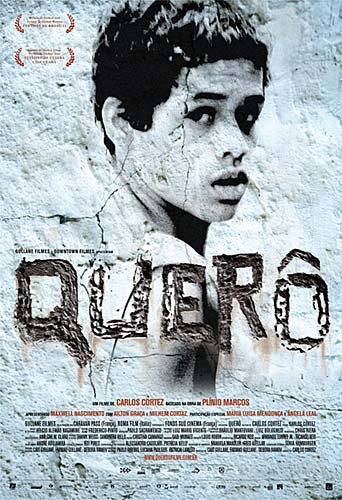
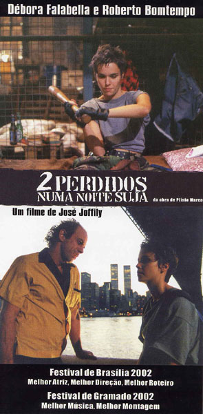
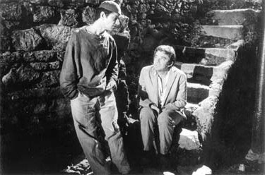
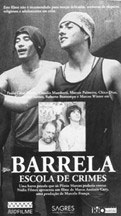

TRABALHOS COMO ATOR
BETO ROCKFELLER, o filme Direção: Olivier Perroy Argumento: Cassiano Gabus Mendes Roteiro: Bráulio Pedroso Montagem: Lúcio Braum Elenco: Luiz Gustavo, Plínio Marcos, Lélia Abramo, Cleide Yáconis, Walmor Chagas, Otelo Zeloni, Mila Moreira, Raul Cortez e outros Personagem: Vitório Ano: 1970
TEXTOS ADAPTADOS
QUERÔ, ver cartaz Título: Querô Direção: Carlos Cortez Atores: Maxwell Nascimento, Ailton Graça, Milhem Cortaz com participação especial de Maria Luisa Mendonça e Ângela Leal Fotografia: Hélcio Alemão Nagamine Duração: aprox. 90 min. Distribuidora: Downtown Filmes Ano: 2006 Formato: 35 mm / 1.1.85 / cor / Som digital
NAVALHA NA CARNE, 1ª adaptação Título: A Navalha na Carne Direção: Braz Chediak Atores: Glauce Rocha, Jece Valadão, Emiliano Queiroz, Carlos Kroebe Fotografia: Hélio Silva Duração: 112 min. Distribuidora: Sagres Ano: 1969 Formato: VHS, PB
NAVALHA NA CARNE, 2ª adaptação
Título: Navalha na Carne
Roteiro: Neville D`Almeida
Direção: Neville D`Almeida
Atores: Vera Fischer, Jorge Perugorría, Carlos Loffler,
Isabel Fillardis, Marcelo Saback, Pedro Aguinaga,
Guará Rodrigues, Rafael Molina
Fotografia: César Elias
Duração: 105 min.
Distribuidora: Europa Filmes
Ano: 1997
Formato: VHS, DVD, COR
DOIS PERDIDOS NUMA NOITE SUJA, 1ª adaptação Título: Dois Perdidos numa Noite Suja Roteiro: Braz Chediak, Emiliano Queiroz e Nelson Xavie Direção: Braz Chediak Atores: Emiliano Queiroz e Nelson Xavier, e outros Fotografia e Câmera: Hélio Silva Produtora: Magnus Filmes (Jece Valadão) Ano: 1970 Formato: VHS, PB
DOIS PERDIDOS NUMA NOITE SUJA, 2ª adaptação
Título: Dois Perdidos Numa Noite Suja
Direção: José Joffily
Elenco: Débora Falabella, Roberto Bomtempo
Roteirista: Paulo Halm
Diretor de fotografia: Nonato Estrela
Montagem: Eduardo Escorel
Co-produtor: Roberto Bomtempo
Ano de produção: 2002/estreia Abril 2003
Duração: 100 minutos
Distribuição em cinema: Riofilme
BARRELA
Título: Barrela, Escola de Crimes Roteiro: Marco Antonio Cury, Marcos Flacksman, Cláuido Mamberti e Gilberto Loureiro. Direção: Marco Antonio Cury Atores: Paulo César Pereio, Marcos Palmeira, Cláudio Mamberti, Roberto Bomtempo, Marcos Winter, Cosme dos Santos, Chico Diaz Duração: 75 min. Distribuidora: Sagres / Riofilme Ano: 1990 Formato: VHS, COR
QUERÔ, UMA REPORTAGEM MALDITA
Título: Barra-Pesada
Original de: Plínio Marcos
Roteiro e direção: Reginaldo Faria
Música: Edu Lobo
Fotografia: Fernando Duarte
Atores: Stepan Nercessian, Kátia D’Angelo, Cosme dos Santos,
Milton Moraes, Ítala Nandi, Ivan Cândido, Wilson Grey, Lutero Luís
Ano: 1977 O TELEPATA, curta-metragem
Adaptação da crônica O telepata
Argumento e roteiro: Gustavo Brandão e Javier Contreras
Direção: Gustavo Brandão
Elenco: Tanah Correa, Alexandre Borges, Valéria Simeão, Tamayo de Faria
Fotografia: Newton Leitão
Som direto: Henrique Pires
Direção de arte e figurino: Akanê Barkó
Montagem: Ângelo Capozzoli e Gustavo Brandão
Produção: Vitória Giradelli e Ângelo Capozzoli
Duração: 14m
16mm/cor O ABAJUR LILÁS, curta-metragem
Título: O Abat-jour lilás
Livre adaptação da peça de Plínio Marcos, com inserções
documentais sobre a prostituição no Brasil, baseadas na série
de reportagens da Revista Época
Produção: Tempo Gláuber Departamento de Cursos de Cinema
Filme de formatura da turma de 2000
Direção: Adriana Vita, Cláudia Pujet, Daniela Vitorino, Luciana Melo,
Heron Hay e Rodrigo Infante
Elenco: Marcos Breda, Sandra Barsotti, Juliana Guimarães,
Marília Passos, Deoclides Gouveia
Roteiro: Jorge Monclar
Fotografia e câmera: Jorge Monclar
Som: Gustavo Sá
Direção de arte: Irene Black
Duração: 32 m, Digital/Canonxl, 1
ARGUMENTOS ORIGINAIS
NENÊ BANDALHO
Argumento e diálogos: Plínio Marcos
Roteiro e Direção: Emílio Fontana
Fotografia e câmera: Pio Zamuner
Elenco: Fernando Benincasa, Leda Vilela, Oswaldo Barreto, Jairo Savini, Augusto Marciel, Rodrigo Santoro,
Maria do Carmo Bauer
Produção: Douglas Marques de Sá Produções Artísticas
Sonoplastia: Salatiel Coelho
Ano: 1971
(O filme nunca teve lançamento comercial, porque foi proibido pela Censura Federal após ser finalizado.)
A RAINHA DIABA
Argumento: Plínio Marcos Diálogos: Plínio Marcos e Antônio Carlos Fontoura Roteiro: Antônio Carlos Fontoura Direção: Antônio Carlos Fontoura Fotografia: José Medeiros Atores: Milton Gonçalves, Odete Lara, Stepan Nercessian, Nélson Xavier, Iara Cortes, Wilson Grey, Luter Luiz, Edgard Gurgel Aranha Ano: 1974
ARGUMENTOS ORIGINAIS INÉDITOS
ARGUMENTOS PARA FILME POLICIAL, sem título, escrito em meados da década
de 70; ação desenrola-se na cidade do Rio Grande, no Rio Grande do Sul;
original datilografado encontra-se no acervo de Plínio Marcos O ANIVERSÁRIO, roteiro e diálogos, meados da década de 70; original datilografado
encontra-se no acervo de Plínio Marcos